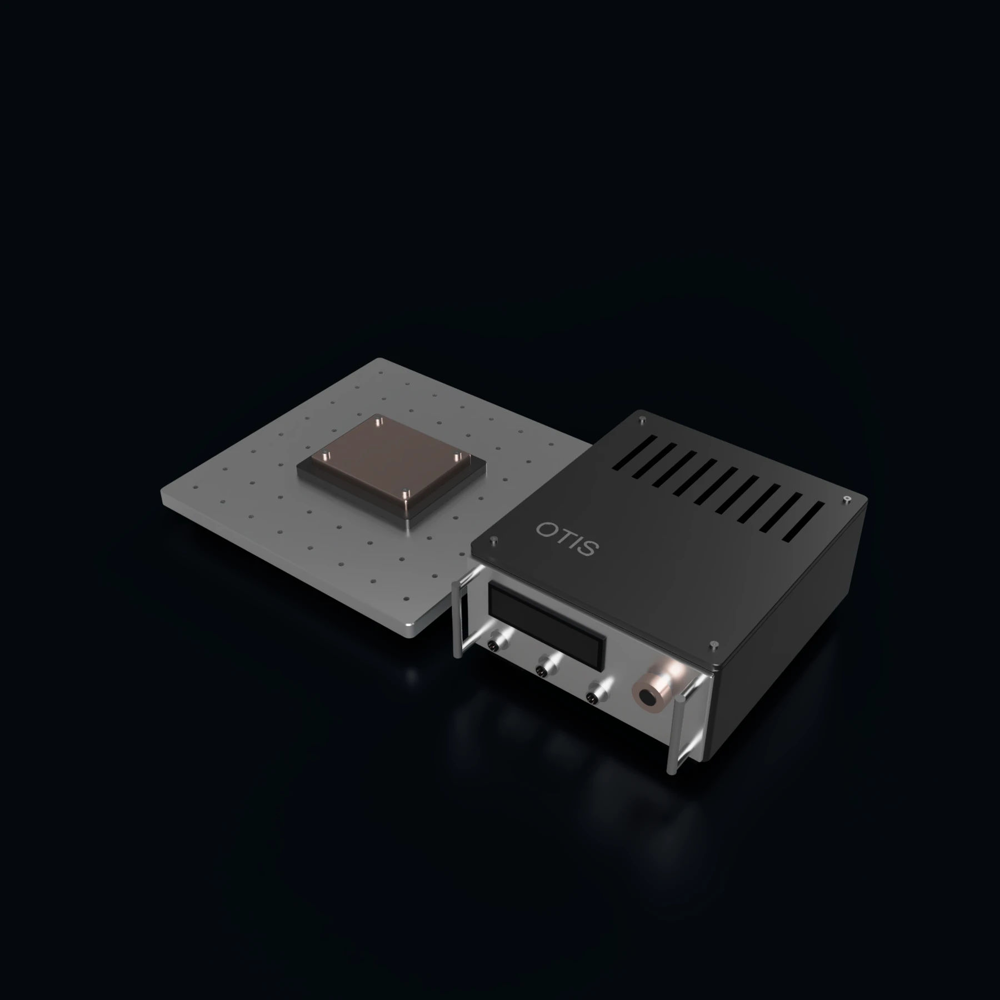

OrbitBench
Thermal testing for spacecraft workloads
We are developing OrbitBench to measure how computing workloads and thermal hardware behave together. The platform would combine controllable heat loads, instrumentation, and analysis software for ground evaluation.

Intended applications
OrbitBench is intended for payload developers, spacecraft integrators, and test laboratories assessing operating limits and computing duty cycles. It will support component comparisons, controller development, and model correlation.
Design scope
Workload reproduction
Reproduce representative computing or heat-load profiles so designs can be compared under the same input conditions.
Synchronized measurements
Record temperatures, power use, and relevant workload outcomes with a defined measurement setup.
Model comparison
Compare repeated tests and identify differences between predicted and measured thermal behavior.
Integration requirements
These inputs will determine the design and evaluation scope.
- The hardware under test and the workload or heat profiles to reproduce.
- Required thermal conditions and access to suitable environmental equipment.
- Sensors, measurement accuracy, sampling rates, and calibration needs.
- Acceptance criteria, data formats, and reporting requirements.
Development and evaluation
Development and test platform
The first priority is a repeatable, calibrated bench with a clear account of measurement uncertainty. Tests will compare hardware and control approaches using the same inputs and acceptance criteria.
Thermal-vacuum and flight-qualification testing require appropriate facilities and a separately defined scope. A bench evaluation does not by itself qualify hardware for flight.
Related products
Discuss OrbitBench with our team
Share the hardware you need to evaluate and the conditions the test must reproduce.